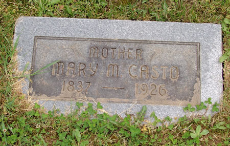

Mary Margaret Bradley
June 1837 – 10 December 1926
Bradley line · Rockbridge County, Virginia; Staats Mills, Jackson County, West Virginia
Profile status: SUPPORTED
Quick Facts
Born
June 1837, Rockbridge County, Virginia SUPPORTED (census-derived: Casto Connections cites the 1880 + 1900 censuses; no birth record can exist — Virginia county birth registration began 1853. Some tree profiles give the day as 2 June 1837; the day is unproved — the censuses give month and year only. Birthplace unresolved: Rockbridge is carried, Jackson is claimed on some trees)
Died
10 December 1926, Staats Mill, Jackson County, West Virginia, aged 89 years 6 months DOCUMENTED (West Virginia state death certificate No. 17024, VRR image Id 699740, read directly: “Mary Magadalene Casto”, cause “Old age”, father James Bradley, mother “Not known”, informant S. G. Keelbaugh (Gay), filed 15 Dec 1926, burial “Sinyville Cem.” 12 Dec 1926, undertaker Joe Vail, Ripley. The county death register’s 12/10/1925 entry and the FamilySearch index (ARK N9ZK-K2F) and WikiTree carry the WRONG year — see Research Notes)
Married
Joel Casto, 17 September 1857, Jackson County, Virginia
DOCUMENTED (marriage register image read twice: FS film 1862398 Item 1, DGS 007627827, image 9 of 63, register p. 11 entry 9; ages 24/20, both single; parents “Geo & Sarah” / “Jas & Nancy”; bride “Mary M Bradley”, no middle name)
Occupation
Housewife SUPPORTED (death certificate and county register both list Housewife)
Buried
Siniaville Cemetery (Old Siniaville), Staats Mills, Jackson County, West Virginia SUPPORTED (death certificate: burial “Sinyville Cem.” 12 Dec 1926; stone Row 8, legible, read from the photograph: “MOTHER / MARY M. CASTO / 1837 — 1926”)
Name
Her name is carried as “Mary Margaret Bradley” SUPPORTED (three compiled sources; “Mary Magdalene” is the minority reading — the 1990 county history, the Tug Fork history, and the death certificate itself spells “Mary Magadalene”. The marriage register gives only “Mary M Bradley” — no middle name)
Immediate Family
Parents
James Bradley ×
Nancy Rhodes SUPPORTEDTheir place as Mary’s parents is carried as the position in the research folder at SUPPORTED — a strong reconstruction, not proved. The 1857 marriage register names “Jas & Nancy”; Sophrona’s 1928 death register names father James Bradley AND mother Nancy Rhodes — Nancy as mother is DOCUMENTED there. James was born about 1810 (1850 household: James 40); Don Norman’s “about 1820” is CONTRADICTED — James fathered Sarah, born July 1829. James died before 1880; Nancy was born 1810 in Virginia and died after 1880. The “H.” in “James H. Bradley” is on no record. The family moved Rockbridge → Jackson 1845–1848 by the birthplace sequence (Charles’s birth year, 1848 vs about 1845, decides the bracket). Full conflicts in Research Notes.
Spouse
Joel Casto (born about 1834; died 25 September 1886), married 17 September 1857, Jackson County, Virginia
DOCUMENTEDMarriage 17 September 1857, Jackson County — the register writes the bride “Mary M Bradley”; entry No. 9, ages 24/20, both single; her maiden name was Bradley.
Children
Benjamin E. Casto (born about 9 September 1858; died 7 November 1868, “son of J & M Casto”, aged 10)
DOCUMENTED (stone transcription); middle initial E vs C unresolved
Nancy Jane Casto (born 15 July 1860; died 1918; married James M. Fisher 12 June 1878)
DOCUMENTED (birth RESOLVED — VRR birth register, father “Joll Casto”)
William Monroe Casto (born 7 February 1863, Staats Mill; died 27 October 1950, Staats Mill; married Cora Winter/Winters 28 May 1898)
SUPPORTEDFrederick Mintin “Mint” Casto (born 8 August 1865, Staats Mill; died 11 May 1955, Ripley; married Arvilla B. Lawson 28 July 1887, Roane Co.)
SUPPORTEDLougenia Casto (born 1867 by the stone, 1868 by Casto Connections; died 1913; married William M. Rhodes)
DOCUMENTED (stone); motherhood SUPPORTED by three Rhodes children’s marriage transcriptions naming William M. & Lougenia (Casto) Rhodes as parents
Okey Johnson Casto (born April 1870; died 1952; married Della Staats 24 December 1905)
SUPPORTED; his 1905 marriage record gives age 32, implying birth about 1873 — conflict with the stone’s 1870
Martha L. Casto (born 1872; fate unknown)
UNPROVEDLilly F. / Lillie Frances Casto (born 1876 by Casto Connections, 1875 by Find a Grave; died 1912 by Find a Grave only; married Morris by Find a Grave only)
UNPROVEDNancy Jane is the direct line. The 1900 census counts 8 children born to Mary, 7 living — fitting these eight exactly, Benjamin E. the one dead. Robert P. Casto and “Matthew/Mathew Lee” Casto are NOT carried — both are excluded with reasons in Research Notes. Martha L. and Lougenia are two sisters; Find a Grave’s single “Martha Lougenia Casto Rhodes 1877–1943” is CONTRADICTED as one person.
Siblings
Sarah E. Bradley (born July 1829 Rockbridge — 1832 by the stone, Don Norman and the 1990 county history; died 1 November 1908, Staats Mills, aged 69y 6m, cause “Softening of Brain” — RESOLVED by the death register, VRR Id 5810352 line 20 + typed index Id 5802303; the stone’s 1907 is wrong; married James C. Casto 21 December 1854)
DOCUMENTED (register image, folio 3, line 9, ages 25/25)
Robert H. Bradley (born 1836 Rockbridge; married Barbara Rhodes 21 February 1856)
DOCUMENTED (register image Id 11200918, folio 7, line 7, ages 20/18; the bride is indexed “Barbary Rodes”)
Elizabeth Bradley (born 1833, Botetourt County by Casto Connections — an outlier against the siblings’ Rockbridge pattern; married Miles Rardon 15 March 1855)
DOCUMENTED (register image Id 11201098, folio 3, line 26, ages 22/22); birthplace UNPROVED
John M. Bradley (born 1845 Rockbridge; married Caroline Greenleaf 12 November 1866; an “Other Spouse: N.V. Board, 22 Aug 1861” in Casto Connections is unresolved — flagged, not merged)
SUPPORTEDSophrona G. Bradley (born 1843 Rockbridge; died 13 May 1928; married Jacob Casto 12 June 1866)
SUPPORTED (strongest after Sarah; her 1928 death register names father James Bradley and mother Nancy Rhodes)
Charles S. / Charles Lewis Bradley (born 1848 Jackson by Casto Connections, about 1845 by Don Norman; married Ruhama Greenleaf 4 April 1868)
SUPPORTEDThree Bradley sisters married three Castos — Sarah × James Cunningham Casto 1854, Mary × Joel Casto 1857, Sophrona × Jacob Casto 1866 (Jacob is William Jr. × Martha’s son, born 1845; Sophrona was his second wife; keep him plain “Jacob Casto” — neither “Jacob A.” nor “Jacob B.” belongs to him). No sibling has a profile page, so no sibling name is linked here.
On Family Tree Sites
Life Timeline
June 1837 · age 0
Born, Rockbridge County, Virginia SUPPORTED (census-derived; no birth record can exist)
1845–1848 · age 8–11
Family moves Rockbridge → Jackson County UNPROVED (Casto Connections birthplace sequence: John b. 1845 Rockbridge, Charles b. 1848 Jackson; Don Norman says before 1845)
1850 · age 12
Census, Ripley, Jackson County, household 316: James 40, Nancy 37, Sarah E. 18, Elizabeth 17, Robert H. 14, Mary M. 12, Sophronia G. 8, John M. 6, Charles L. 2 — all born Virginia DOCUMENTED (image read, FS ARK M8D4-T24)
17 September 1857 · age 20
Married Joel Casto, Jackson County DOCUMENTED (marriage register image)
1860 · age 22
Census, Jackson County, dwelling 1115, family 954: Joel 26, Mary M. 22, Benj E. 2 DOCUMENTED (image read, FS ARK M41Z-DJB, DGS 005171723 Item 4, image 149 of 215)
1870 · age 33
Census, Jackson County, household 131: Joel 36, Mary M. 30, Nancy J. 10, William M. 7, Frederick 5, “Eugenia” 2, Okey J. infant DOCUMENTED (image read, FS ARK MZ42-7QB, film 004268427, image 253 of 272)
1880 · age 43
Census, Jackson County, ED 41, sheet 422A, dwelling 361: Joel 46, Mary M. 42, Wm. M. 17, Frederick M. 15, Lougenia 12, Okey J. 10, Martha L. 8, Lilly F. 4 DOCUMENTED (image read, FS ARK M6RP-LGW)
25 September 1886 · age 49
Widowed (Joel dies, aged 52) DOCUMENTED (at transcription level — Old Siniaville transcription, Row 4)
1900 · age 63
Census, Jackson County: “May M Casto”, Widowed, Head, b. June 1837: 8 children born, 7 living; son “Okeg J Casto” 30 and “Jennie Rhodes” 12 in household DOCUMENTED (image read, FS ARK M9CL-Q7S; attached to a separate FamilySearch person “May M Casto” GFJ3-1K1, a possible duplicate of LCZ3-DBR — flag, no merge)
1910 · age 71
Census: “Mary M Casts”, Widowed, Mother, in son Okey J.’s household, with Delia J. 27 and 2-year-old “Gennavce Casts” SUPPORTED (image read, FS ARK MPNC-WKB)
1920 · age 82
Census: “Mary C??t?s”, Widowed, Mother, in son Okey J.’s household (49) with Della 37 and children “Genaver” 11 and “Atta” 9y 6m SUPPORTED (image read, FS ARK MNLQ-SZC)
10 December 1926 · age 89
Died, Staats Mill DOCUMENTED (state death certificate No. 17024)
Burial
Siniaville Cemetery, 12 December 1926 SUPPORTED (death certificate + legible stone, Row 8)
Life Story
Mary Margaret Bradley was born in June 1837 in Rockbridge County, Virginia, daughter of James Bradley and Nancy Rhodes. Her parents’ place is carried as the position in the research folder at SUPPORTED — a strong reconstruction, not proved — resting on the 1857 marriage register, which names “Jas & Nancy”, and on her sister Sophrona’s 1928 death register, which names father James Bradley and mother Nancy Rhodes. When Mary was about eight to eleven, the family moved from Rockbridge County to Jackson County, where the 1850 census finds them at Ripley: James 40, Nancy 37, and seven children, Mary M. aged 12 among them.
On 17 September 1857, aged twenty, Mary married Joel Casto in Jackson County, Virginia. The marriage register writes her “Mary M Bradley”, gives their ages as 24 and 20, both single, and names the parents “Geo & Sarah” and “Jas & Nancy”. They farmed at Staats Mills, and the censuses find them there from 1860 through 1920: Joel and Mary with their growing household in 1860, 1870 and 1880, Mary widowed and head of household in 1900, and Mary living as mother in her son Okey’s household in 1910 and 1920. Eight children are carried — Benjamin E., Nancy Jane, William Monroe, Frederick Mintin, Lougenia, Okey Johnson, Martha L., and Lilly F. — and the 1900 census counts eight children born to Mary, seven living, Benjamin E. the one dead. Nancy Jane carries the line, marrying James M. Fisher in 1878.
Joel died on 25 September 1886, aged fifty-two, and Mary was widowed at forty-nine. She lived forty more years as a widow, most of them in her son Okey’s household at Staats Mills, and was still there in the 1920 census at eighty-two. Her two youngest daughters, Martha L. and Lilly F., disappear from the record after 1880, and their fates are unknown.
Mary died on 10 December 1926 at Staats Mill, aged eighty-nine years and six months, of old age, and was buried at Siniaville Cemetery on 12 December 1926. Her headstone at Old Siniaville, Row 8, reads “MOTHER / MARY M. CASTO / 1837 — 1926”, legible in the photograph. No portrait of Mary exists anywhere, so her headstone is the hero of this page. Her two death-record images are filed in Pictures and cited in Sources, not placed on the page.
Sources and Evidence
- Jackson County Register of Marriages, 17 Sep 1857 (FS film 1862398 Item 1, DGS 007627827, image 9 of 63, register p. 11 entry 9 — image read) DOCUMENTED (register image)
- West Virginia state death certificate No. 17024, Mary Magadalene Casto (VRR image Id 699740, read directly): d. 10 Dec 1926, age 89y 6m, Staats Mill, cause “Old age”, father James Bradley, mother “Not known”, informant S. G. Keelbaugh (Gay), filed 15 Dec 1926, burial “Sinyville Cem.” 12 Dec 1926, undertaker Joe Vail (Ripley) DOCUMENTED (state certificate image)
- Jackson County Indexed Register of Deaths (film 4228467 frame 00053, image in Pictures): “Casto, Mary M.” d. 12/10/1925, age 89y 6m, Staats Mill, cause “Senilty”, father James Bradley, informant A. C. Harpold DOCUMENTED (the 1925 year is the wrong year; the state certificate + stone give 1926 — see Research Notes)
- Headstone, Old Siniaville Cemetery, Row 8 (photograph read directly): “MOTHER / MARY M. CASTO / 1837 — 1926” DOCUMENTED (stone photograph)
- Old Siniaville Cemetery transcription (wvgw.net, visited 11 May 2006, read directly): Mary M. “Mother” 1837–1926 Row 8; Joel “Died Sept 25, 1886 Aged 52” Row 4; Sarah E. 1832–1907 + Dr. James C. 1829–1919 Row 4; Jacob B. 1845–1930 + Sophrona 1843–1928 Row 6 DOCUMENTED (transcription)
- US census 1850, Jackson Co., VA (FS ARK M8D4-T24, Ripley, household 316 — image read): James 40, Nancy 37, Sarah E 18, Elizabeth 17, Robert H 14, Mary M 12, Sophronia G 8, John M 6, Charles L 2, all born Virginia DOCUMENTED (census image)
- US census 1860, Jackson Co., WV (FS ARK M41Z-DJB, dwelling 1115, family 954, p. 147, DGS 005171723 Item 4, image 149 of 215 — image read): Joel 26, Mary M 22, Benj E 2 DOCUMENTED (census image)
- US census 1870, Jackson Co., WV (FS ARK MZ42-7QB, household 131, film 004268427, image 253 of 272 — image read): “Joel Caste” 36, Mary M 30, Nancy J 10, William M 7, Frederick 5, “Eugenia” 2, Okey J. infant DOCUMENTED (census image)
- US census 1880, Jackson Co., WV (FS ARK M6RP-LGW, ED 41, sheet 422A, dwelling 361 — image read): Joel 46, Mary M. 42, Wm. M. 17, Frederick M. 15, Lougenia 12, Okey J. 10, Martha L. 8, Lilly F. 4 DOCUMENTED (census image)
- US census 1900, Jackson Co., WV (FS ARK M9CL-Q7S — image read): “May M Casto”, 63, Widowed, Head, b. June 1837: 8 children born, 7 living; “Okeg J Casto” 30, “Jennie Rhodes” 12 DOCUMENTED (census image)
- US census 1910, Jackson Co., WV (FS ARK MPNC-WKB — image read): “Mary M Casts” 71, Widowed, Mother, in Okey J.’s household, with Delia J 27 and “Gennavce Casts” 2 SUPPORTED (census image)
- US census 1920, Jackson Co., WV (FS ARK MNLQ-SZC — image read): “Mary C??t?s” 82, Widowed, Mother, in Okey J.’s household (49) with Della 37 and children “Genaver” 11 and “Atta” 9y 6m SUPPORTED (census image)
- Sophrona (Bradley) Casto death register, 13 May 1928 (read directly): father James Bradley, mother Nancy Rhodes DOCUMENTED (Nancy as the Bradley sisters’ mother, from a primary register entry)
- Jackson County Register of Marriages (VRR images, read directly): Elizabeth Bradley × Miles Rardon, 15 Mar 1855 (image Id 11201098, folio 3, line 26, ages 22/22); Robert H. Bradley × Barbary Rodes, 21 Feb 1856 (image Id 11200918, folio 7, line 7, ages 20/18; bride indexed “Barbary Rodes”, found only by groom-only search); James C. Casto × S. E. Bradley, 21 Dec 1854 (folio 3 image, line 9, ages 25/25) DOCUMENTED (register images)
- Sarah E. Casto death register, 1 Nov 1908, Staats Mills (VRR Id 5810352 line 20 + typed index Id 5802303, read directly): age 69y 6m, cause “Softening of Brain” DOCUMENTED (the stone’s 1907 is wrong)
- Casto Connections, Joel × Mary Margaret family group (castoconnections.com/gedcom/f42.htm, read directly): the census-cited 8-child roster; Mary b. Jun 1837 Rockbridge, d. 10 Dec 1926 SUPPORTED (compiled)
- Casto Connections, Bradley name list (names10.htm, read directly): James Bradley d. bef 1880; Nancy B. Rhodes b. 1810 VA, d. after 1880; seven children SUPPORTED (compiled)
- Don Norman, “Descendants of James Bradley” (PDF, read in full): James b. about 1820, moved before 1845, married Nancy in Jackson Co.; only known child Charles Lewis UNPROVED (compiled, no source given; the ~1820 birth year is CONTRADICTED by the register evidence and the “before 1845” move by the birthplace sequence)
- Genealogy.com Casto forum post, 10 Feb 2000 (read in full): Mary Margaret Bradley b. 1837 d. 1926, parents James Bradley × Nancy Rhodes UNPROVED (compiled post, self-declared uncertain)
- WikiTree, read live 8 Nov 2026: Mary Magdalene (Bradley) Casto Bradley-13544 (carries the WRONG death year 1925, following the FamilySearch index); Nancy Jane (Casto) Fisher Casto-664; George Sr. Casto-176 SUPPORTED (tree read live)
- FamilySearch, read live 8 Nov 2026: Mary LCZ3-DBR; Joel K2FS-HM2; Nancy KJ4P-K2N; James H. Bradley LR2P-BTV; Nancy Rhodes KZP9-L3K; “May M Casto” GFJ3-1K1 (possible duplicate of LCZ3-DBR — flag, no merge) SUPPORTED (tree read live). The FamilySearch index for Mary’s death, ARK N9ZK-K2F, gives 10 Dec 1925 — the wrong year.
- Find a Grave, read live 8 Nov 2026: Mary 8379936 (b. 1837 Rockbridge, d. 1926 aged 88–89; 1 photo, 1 flower); Joel 8373672 (b. 1834, d. 25 Sep 1886 aged 51–52; 2 photos, 1 flower, 8 children linked) SUPPORTED (memorial read live). The Find a Grave photo CDN was blocked, so no stone photo could be viewed there; Mary’s stone text is confirmed from the Geni photo and the 2006 photograph in Pictures.
- Geni, read live 8 Nov 2026: Mary 6000000000630069228; Joel 6000000000630069218; Nancy 6000000036901132290; James H. Bradley 6000000155545576857; Nancy B. Bradley (Rhodes) 6000000036901115134 SUPPORTED (every Geni ID verified live, character for character; Nancy’s live ID governs — the transcript’s carried 60000000036901132290 has one extra zero and is NOT used)
- Ancestry Brewster tree (212654536), MyHeritage (251 people), Findmypast (85 people), Tricia’s Ancestry tree (44342901) — checked signed in 8 Nov 2026: the couple is ABSENT on all four (genuine negatives); Nancy Jane is present (Ancestry 162814898528; MyHeritage 1000094, “Born on July 15 1860?”; Findmypast fmp-33238226-2127692724). Tricia’s tree holds only the namesake Joel B. Casto 1854–1932 (David L. × Louisa’s son) — do NOT merge. Tricia’s tree also shows a Nancy Casto 1862–1936 × James M. Fisher 1857–1918, a possible duplicate pair — flagged, not merged SUPPORTED (signed-in checks)
Grades: DOCUMENTED an original record says it · SUPPORTED several records point to it · FAMILY ACCOUNT the family’s own telling · UNPROVED a lead, not proved.
Research Notes and Open Questions
- Grades on this page: DOCUMENTED means an original record was read; SUPPORTED means a claim attested by filed research — the census images, the marriage-register image, the cemetery transcription, the signed-in tree checks — but not by an original record read here; UNPROVED means a claim carried from the research folder with no corroboration found.
- Mary’s name: “Mary Margaret” (SUPPORTED, three compiled sources) vs “Mary Magdalene” (minority: the 1990 county history, the Tug Fork history, and the death certificate itself spells “Mary Magadalene”). The marriage register gives only “Mary M Bradley” — no middle name. A “Mary Magdalene” Casto — George Sr.’s daughter Polly, b. 1816 — exists in the family; a likely source of the confusion.
- Mary’s birth: June 1837 (Casto Connections, census-derived) leads; some tree profiles give the day as 2 June 1837 — the day is unproved. The variants ~27 Mar 1840 (stone age-math) and 28 Mar 1837 are not adopted. If the 1925 death year were right, birth would be about June 1836.
- Mary’s death: 10 Dec 1926 (state certificate No. 17024 + stone) vs 12/10/1925 (county register). RESOLVED to 1926 by the state certificate (filed 5 days after the stated death) with the stone agreeing; the county register, the FamilySearch index (ARK N9ZK-K2F), the FamilySearch person page and WikiTree Bradley-13544 all carry the wrong year. Both records give age 89y 6m.
- Birthplace unresolved: Rockbridge County is carried (Casto Connections, census-derived); Jackson County is claimed on some trees.
- James Bradley’s birth year: about 1810 (1850 household: James 40) vs about 1820 (Don Norman, unsourced estimate — CONTRADICTED; James fathered Sarah, b. Jul 1829). Don Norman’s account is also internally inconsistent (marriage “in Jackson County” vs children born Rockbridge 1829–1843 and the move “before 1845”). The “two James Bradleys” alternative stays open but is not the lead.
- Bradley move Rockbridge → Jackson: 1845–1848 (Casto Connections birthplace sequence) vs before 1845 (Don Norman) — UNPROVED; the bracket turns entirely on Charles’s birth year (1848 per Casto Connections vs about 1845 per Norman, both unsourced).
- Sarah E. Bradley birth: Jul 1829 (Casto Connections) vs 1832 (Don Norman + 1990 county history + forum + stone). Her death is RESOLVED to 1 Nov 1908 (register); the stone’s 1907 is wrong.
- Elizabeth Bradley birthplace: Botetourt County 1833 (Casto Connections) vs the Rockbridge pattern of all siblings — UNPROVED. John M. Bradley’s “Other Spouse: N.V. Board, 22 Aug 1861” is unresolved — flagged, not merged.
- “May M Casto” (FamilySearch GFJ3-1K1) is a possible duplicate of Mary’s LCZ3-DBR — flag, no merge.
- “Jennie Rhodes” (age 12 in Mary’s 1900 household), “Atta” Casto and “Genaver/Genavce” (in Okey’s 1910/1920 households) are unidentified — open.
- Robert P. Casto EXCLUDED and “Matthew/Mathew Lee” Casto SPURIOUS — same reasons as on Joel’s page (absent from Casto Connections’ census-cited 8-child roster and from all three household reads; 1900 census 8 born, 7 living). Martha L. and Lougenia are TWO sisters; Find a Grave’s single “Martha Lougenia Casto Rhodes 1877–1943” is CONTRADICTED as one person.
- Benjamin E. vs “Benjamin C.”: middle initial E (stone) vs C (Casto Connections/FamilySearch); stone leads. Okey Johnson birth year 1870 (stone/Casto Connections) vs about 1873 (his 1905 marriage record, age 32). Lougenia birth year 1867 (stone, leads) vs 1868 (Casto Connections). Lilly F. birth 1876 (Casto Connections) vs 1875 (Find a Grave). William Monroe’s wife “Winter” vs “Winters”.
- Geni’s extra children Edward Otmer Fisher and Bida Fisher (for Nancy Jane × James M. Fisher) are UNVERIFIED — NOT adopted. MyHeritage adds an infant Okey L. Fisher (b. 26 Jul 1881 d. 23 Sep 1881) — unverified. Nancy Jane’s birth 15 Jul 1860 is best-attested (VRR birth register; MyHeritage “July 15 1860?”) vs 17 Jul 1860 (Geni) vs grave 1862 (WikiTree).
- Open: the county death-register image for Mary (the “1925” entry) was not re-pulled (the state certificate settles the date); Martha L. and Lilly F. fates; Nancy Bradley after 1850 (1870/1880, death); Rockbridge 1840 household check (index pp. 388A/410A/448A); Hite books; Nancy Jane’s Find a Grave memorial 74759416; the 1850 “Joel in Sarah Casto household family 356” read (carried, no new reads).